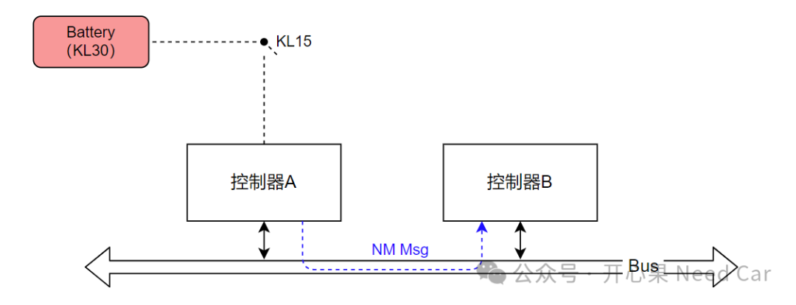
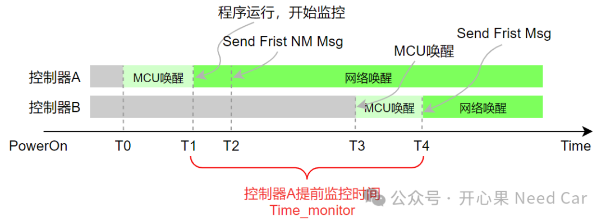

开心果 Need Car · 2024-03-18T11:26:00+08:00 · 微信原文
明确要监控的事件（Event）以后，接下来就是要明确如何监控Event的问题。工程上，我们最先关注的一点：Event监控的使能条件，也就是诊断前置检查条件，有的OEM称为TRC（Test Run Condition，测试运行条件）。
1、为什么需要TRC呢？
为了避免DTC的误报。试想这样一个场景：控制器A启动阶段，不加判断的监控控制器B的通信情况，如果一定时间内(eg：1s）没有收到控制器B的报文，则认为控制器B通信丢失合理吗？控制器A和控制器B包含的外设器件数量不同，代码量不同，一般来说，两者的启动时间也存在着一定的差异，所以，在控制器B没有进入稳定阶段就使能监控，会增加控制器A误报控制器B故障的风险。
（一）场景举例
假设控制器A和控制器B在同一个网段，控制器A可以通过硬线（KL15）唤醒，而控制器B只能通过控制器A发送的网络管理报文（NM Msg）被动唤醒，示意如下：

（二）提前监控的风险
由于控制器A和控制器B的唤醒方式不同，导致两者的MCU唤醒时间和网络唤醒时间不同，如下所示：

T0时刻，车辆冷启动（PowerON），KL15导通，控制器A的MCU被唤醒；
T1时刻，控制器A的软件完成初始化，假设此时就开始监控控制器B的通信状态；
T2时刻，控制器A发出第一帧网络管理报文；
T3时刻，控制器B收到网络管理报文，控制器的MCU被唤醒；
T4时刻，控制器B识别到唤醒源有效，控制器B的MCU软件程序完成初始化，并发出第一帧报文。
从控制器A开始（T1）监控控制器B的通信状态，到控制器B发出第一帧报文（T4），经过了Time_monitor（T4-T1）时间。如果Time_monitor＞通信丢失阈值时间（eg：1s），控制器A就会报控制器B的通信丢失。可是，这样的监控合理吗？显然，这样的监控过于苛刻，因为控制器B并不是真正的不能通信，只是因为启动时间稍晚于控制器A。在这样的工况下，控制器A使能诊断监控并不合理。所以，在诊断中，需要规避这样的诊断工况，即：设置合理的监控使能条件，避免误报DTC。以本文问题为例，诊断的前置条件就应该增加启动延时监控，即：程序启动一定时间（eg：2s）以后开始监控。
除了上述描述的工况外，诊断监控使能条件有很多，比如：网络状态切换需要延时一定时间（eg：5s），模式切（工厂模式、运输模式...）换需要延时一定时间（eg：5s），通信是否busoff，通信电压是否正常等等。在工程开发中，不同的DTC（Diagnostic Trouble Codes，诊断故障码）可能对应不同的诊断前置条件。
往期精彩回顾
Autosar网络管理：Partial Network基础 之 ERA/EIRA、PNC Gateway